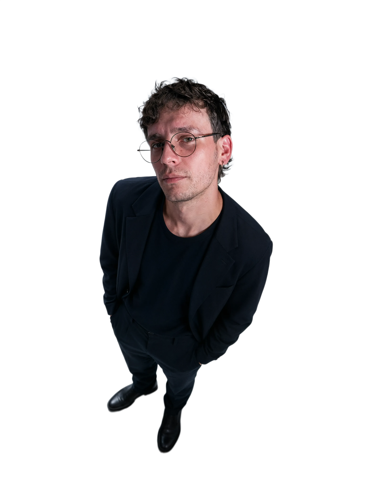
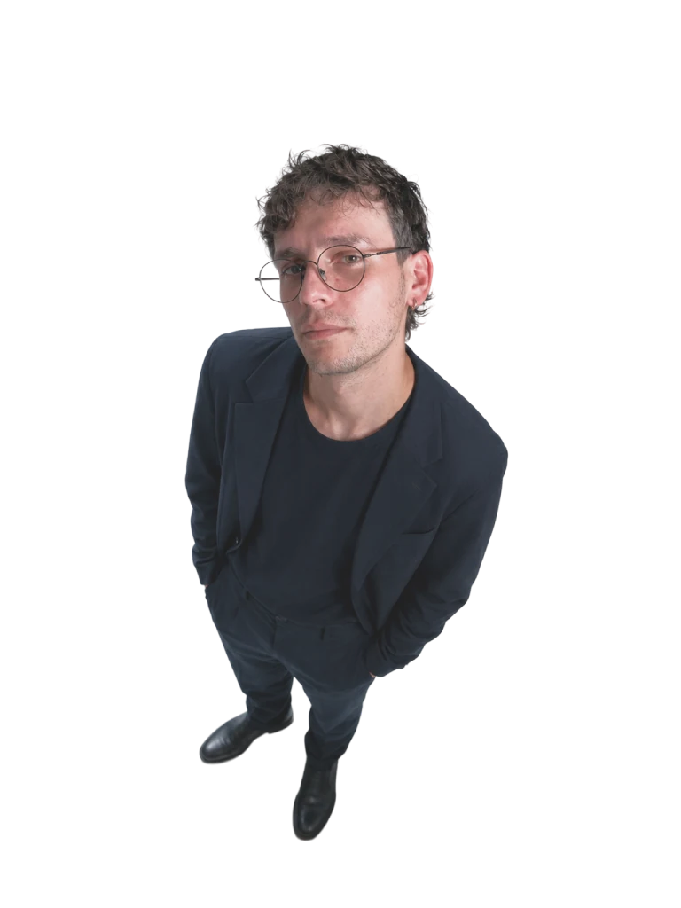

Profile
I bring together creative direction, art direction, design, multimedia, and product thinking to create brands with a clear identity and a strong connection to their audience.
Based in Bolivia. Working worldwide.
Multidisciplinary designer and concept creator



Independent Designer
2026
I specialize in branding and communication, creating bold ideas that connect with people.
I bring together creative direction, art direction, design, multimedia, and product thinking to create brands with a clear identity and a strong connection to their audience.
My experience spans branding, campaigns, multimedia, and digital product design. I balance a strong visual approach with clear strategy and thoughtful, usable design.
I work across design, multimedia, and digital products, choosing the tools that best fit each project—from early ideas to the final details.